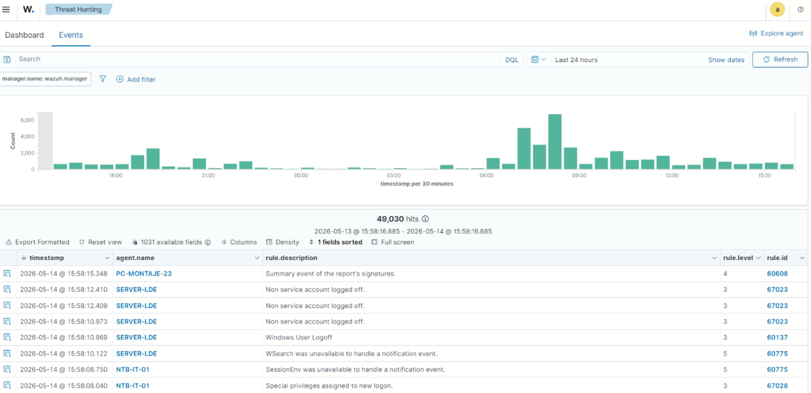
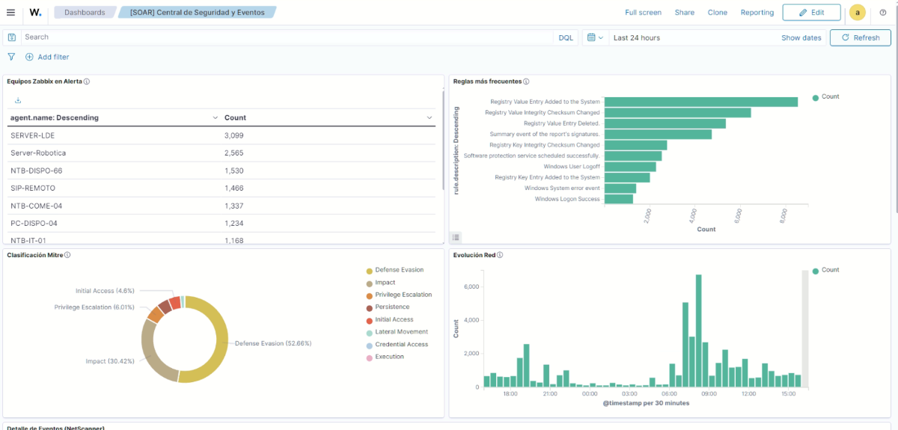
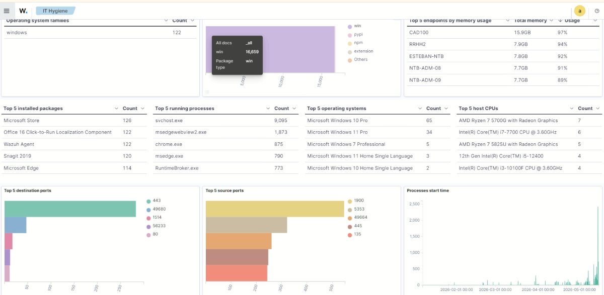
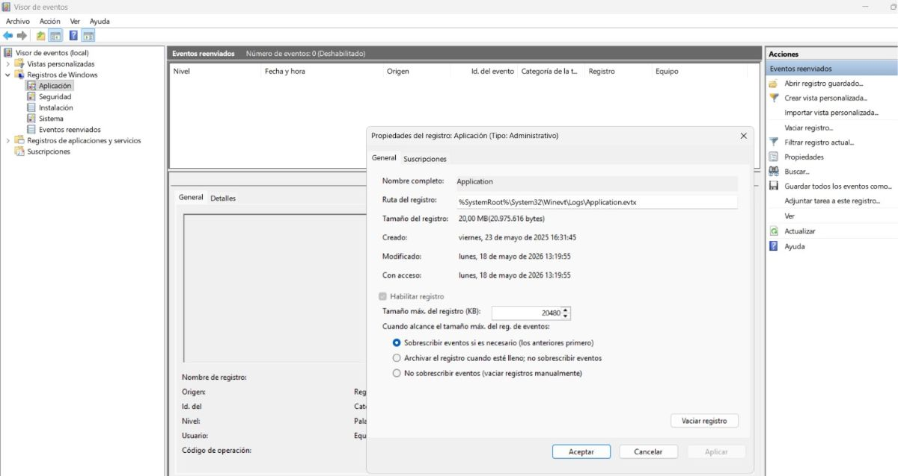

Procedimiento de Gestión de Registros de Eventos
Código: P524-IT-1
Última revisión: 18/11/2026
Rev. N°: 2
Cumple: TISAX (VDA ISA 5.2.4), ISO 27001:2022 (A.8.15, A.8.16, A.8.17)
1 OBJETIVO
Describir cómo se evalúan, configuran, verifican, revisan, escalan y preservan los registros de eventos según la MC524-IT-1 y el control 5.2.4 de TISAX. Unifica el P524-IT-2 Procedimiento de Configuración de Logs.
2 ALCANCE
Sistemas y servicios externos de la MC524-IT-1 §2. Lo ejecuta el Administrador de IT, con revisión del RSI.
3 EVALUACIÓN DE SISTEMAS
| Paso | Responsable | Registro |
|---|---|---|
| 1. Al incorporar un sistema o un servicio externo, registrarlo en el F524-IT-1 y decidir si necesita registro según los datos que maneja y su criticidad | RSI | F524-IT-1 |
| 2. Para servicios externos, consultar al proveedor o en su documentación qué registros y opciones de monitoreo ofrece y por cuánto tiempo | Administrador de IT | F524-IT-1 |
| 3. Definir eventos, ubicación, retención, protección y responsable de revisión; registrar las brechas en el F151-IT-4 | RSI | F524-IT-1 |
4 CONFIGURACIÓN
| Sistema | Configuración | Responsable |
|---|---|---|
| PC y servidores Windows | Agente Wazuh instalado al dar de alta el equipo; política de auditoría de Windows con inicio de sesión, administración de cuentas y cambios de directiva (verificar con auditpol /get /category:*) |
Emiliano Ferrari |
| Microsoft 365 | Auditoría de Purview activa (verificar con Get-AdminAuditLogConfig | Format-List UnifiedAuditLogIngestionEnabled); integración de Office 365 en Wazuh |
Emiliano Ferrari |
| Firewall MikroTik | Envío de registros (syslog) a Zabbix; cambios pedidos a Armanet (P521-IT-1) | Armanet / Emiliano Ferrari |
| Máquinas virtuales Linux de SIP4.0 | Instalar el agente Wazuh para enviar accesos SSH, sudo, eventos del sistema y de Firebird (NC-2026-35) | Nicolás Donato / Emiliano Ferrari |
| SIP4.0 (aplicación) | Desarrollar un registro de auditoría: inicios de sesión, altas, cambios y bajas de registros críticos (usuario, fecha y hora, valor anterior y nuevo), cambios de permisos; sin posibilidad de borrarlo desde la aplicación (previsto para 2027) | Nicolás Donato |
Sincronización horaria (NTP)
- Servidores y PC Windows:
w32tm /config /manualpeerlist:"ar.pool.ntp.org" /syncfromflags:manual /updatey verificar conw32tm /query /status. - MikroTik: cliente NTP activo con la misma fuente (pedido a Armanet).
- Linux (Wazuh, Zabbix, máquinas virtuales de Azure):
timedatectlcon NTP activo.
5 VERIFICACIÓN DE LA CONFIGURACIÓN
- Después de configurar un sistema, generar un evento de prueba (por ejemplo, un inicio de sesión fallido) y verificar que llega a Wazuh o a Zabbix con la hora correcta.
- Una vez al año, y al cambiar la configuración, verificar una muestra de sistemas y registrar el resultado en el F524-IT-1 (columna Estado).
- Si un sistema deja de enviar registros (agente desconectado en Wazuh, sin datos en Zabbix), corregirlo y registrarlo en el F524-IT-2.
6 ATENCIÓN DE ALERTAS Y REVISIÓN MENSUAL
| Paso | Responsable | Registro |
|---|---|---|
| 1. Evaluar cada alerta de Wazuh (Teams) o de Zabbix el mismo día hábil: ¿es esperable o sospechosa? | Emiliano Ferrari | F524-IT-2 (hoja Alertas) |
| 2. Si es sospechosa, escalar según la tabla de MC524-IT-1 §10 y, si es un incidente, registrarlo en el F162-IT-1 (P162-IT-1) | Emiliano Ferrari / RSI | F524-IT-2 · F162-IT-1 |
| 3. Cada mes revisar: resumen de alertas de Wazuh, cambios en cuentas y grupos de administradores, eventos del firewall en Zabbix, agentes desconectados | Emiliano Ferrari | F524-IT-2 (hoja Revisión mensual) |
| 4. Revisar los inicios de sesión de Microsoft 365 | Germán Montalbetti | F412-IT-2 |
| 5. Revisar y firmar el F524-IT-2 del mes | Germán Montalbetti | F524-IT-2 |
7 PRESERVACIÓN DE REGISTROS DE INCIDENTES
- Ante un incidente, exportar de Wazuh, Zabbix, Microsoft 365 o el proveedor los registros relacionados antes de que venzan (90 días en Wazuh, 30 días en Entra).
- Guardarlos en la carpeta del caso en SharePoint IT, con acceso restringido, y referenciarlos en el F162-IT-1.
- Conservarlos hasta 12 meses después del cierre del caso o hasta que termine un proceso legal.
8 REGISTROS Y EVIDENCIAS
| Registro | Retención |
|---|---|
| F524-IT-1 Matriz de Registro de Eventos | Vigente y revisiones anteriores |
| F524-IT-2 Registro de Revisión de Logs | 3 años |
| F412-IT-2 Registro de Revisión de Inicios de Sesión | Según MC412-IT-1 |
| Registros exportados de incidentes | 12 meses después del cierre |
9 ANEXO TÉCNICO: CONFIGURACIÓN DE WAZUH
Capturas de referencia de la configuración de Wazuh y del Visor de eventos de Windows:
Servidores Windows y dispositivos de red (1)

Servidores Windows y dispositivos de red (2)

Configuración estándar de Wazuh

Visor de eventos de Windows (equipos fuera de la oficina)

10 REVISIONES DEL DOCUMENTO
| Rev. N° | Fecha | Descripción |
|---|---|---|
| 0 | 25/8/2025 | Primera emisión del documento |
| 1 | 4/3/2026 | Revisión completa del documento |
| 2 | 18/11/2026 | Unifica el P524-IT-2 (configuración de logs). Evaluación de sistemas y servicios externos (F524-IT-1); configuración real (Wazuh, Microsoft 365, Zabbix) y pendientes de SIP4.0 y Linux; sincronización horaria; verificación; atención de alertas y revisión mensual (F524-IT-2); preservación de registros de incidentes; capturas de Wazuh como anexo técnico. Se quitan Active Directory, triggers de SIP4.0, cifrado AES de registros, NAS cifrado, cláusulas contractuales de registros, redes industriales, aplicación interna, WEF y la plantilla de la aplicación interna. |